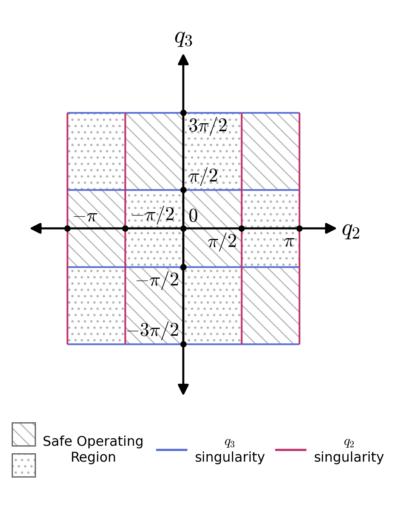
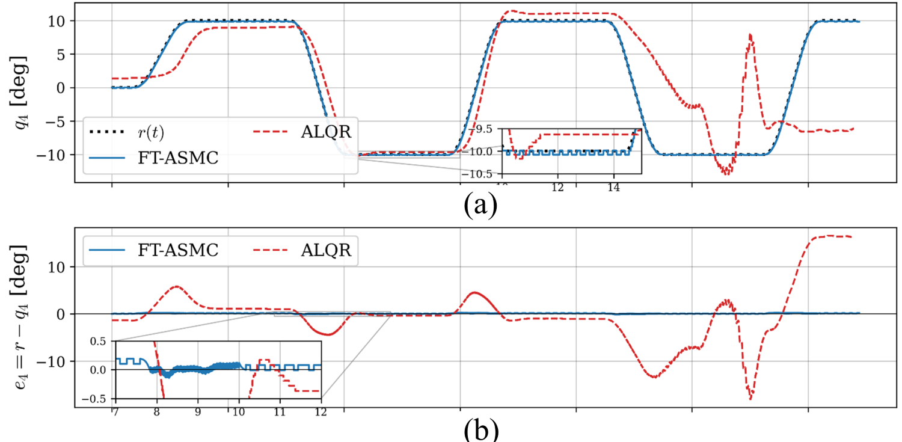

Real-time control of an underactuated double-gimbal control moment gyroscope
The problem
A control moment gyroscope steers a spacecraft, ship, or robot by tilting a fast-spinning rotor. The double-gimbal version has two motors and four rigid bodies, so one axis is never driven directly. It has to be moved through gyroscopic coupling, and the coupling itself changes with the gimbal angles. At certain angles the gimbal axes line up and one control direction disappears entirely. That is gimbal lock, and a controller that wanders into it loses the plant. When I started, nobody had stabilized this configuration on hardware.
What I built
The full stack from model to rig. Euler-Lagrange dynamics with a configuration-dependent inertia matrix; a MATLAB/Simulink controller running through QUARC on a Q8-USB data acquisition board at a 2 ms cycle; optical encoders on every body, filtered and differentiated for velocity; torque commands converted to motor current through a linear current amplifier with saturation limits to protect the motors. I ran all of the hardware experiments and the digital-twin simulations they are compared against.
What the hardware taught me
My first controller was an adaptive LQR built on a state-dependent Riccati equation. It passed every stability check in the linear region and worked on the rig for stabilization tasks. Under a time-varying reference, one gimbal drifted across the gimbal-lock boundary, the linearization behind the Riccati update stopped being valid, and the closed loop diverged. Simulation had not shown this because the model had no notion of the boundary. The hardware did.
So I redesigned the controller as an adaptive sliding mode law with the constraint written into the control law itself. A composite sliding manifold couples the actuated gimbal velocities to the unactuated tracking error, a barrier Lyapunov function pushes the gimbals away from the singular boundaries before they get there, a fractional-power reaching law gives finite-time convergence with a computable time bound, and a gradient adaptation law absorbs friction, encoder quantization, and external disturbance torques without needing to know their bound in advance.
Measured on the rig
| Test | FT-ASMC | Adaptive LQR |
|---|---|---|
| Release from initial error, 2% settling time | 0.94 s | 3.02 s |
| Smooth S-curve tracking, RMS error | 0.12° | diverged past gimbal lock |
| Smooth S-curve tracking, peak error | 0.28° | 18.1° before shutdown |
| Same tracking with an external disturbance torque on the unpowered frame, RMS error | 0.19° | diverged |
Two recent controllers from the underactuated-systems literature were also run on the rig as baselines; both diverged in every test because their stability arguments rely on a gravitational restoring torque that a horizontally mounted gyroscope does not have.
Mathematical background
- Euler-Lagrange modeling of multibody systems, partial linearization, controllability of the actuated and unactuated subsystems
- State-dependent Riccati equation control and its local stability argument
- Sliding mode control for underactuated systems: composite manifolds, reaching laws, chattering and its mitigation
- Lyapunov direct method, LaSalle's invariance principle, barrier Lyapunov functions for state constraints
- Finite-time stability theory, comparison lemmas, Young's and Cauchy-Schwarz inequalities used in the convergence proofs
- Online parameter and disturbance adaptation without a known disturbance bound


